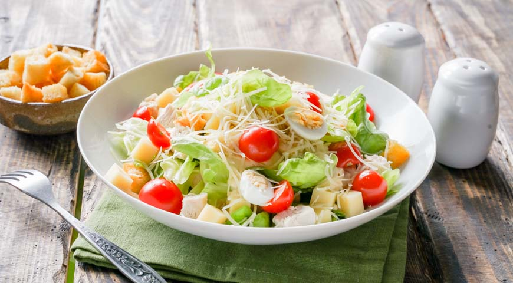
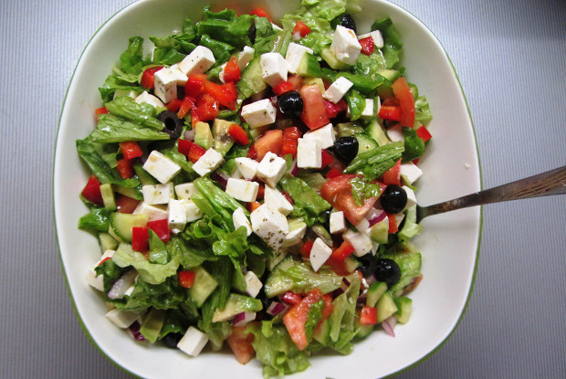
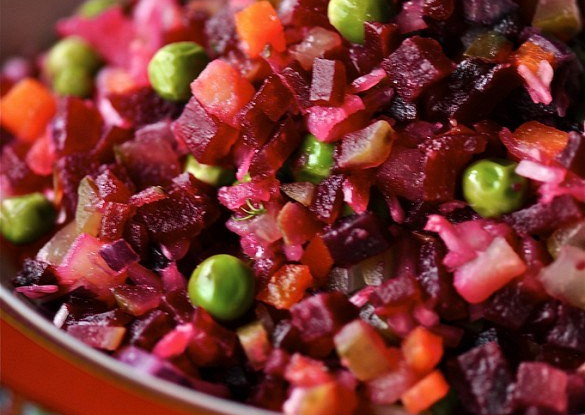
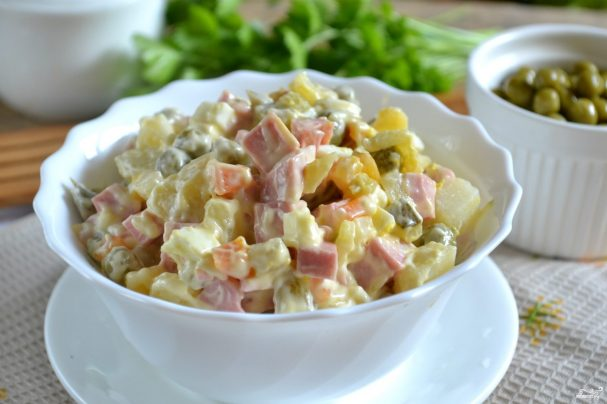

Овощной салат. Популярное блюдо американской кухни. Салат получил название не по имени Гая Юлия Цезаря, а по имени человека, наиболее часто называемого автором этого блюда. Им был американский повар итальянского происхождения Цезарь Кардини.

Cалат из помидоров, огурцов, феты, шалота и маслин, заправленный оливковым маслом с солью, чёрным перцем, орегано. Ключевым компонентом салата является фета. Часто в салат добавляют сладкий перец, каперсы или анчоусы.

Закусочный салат из отварных корнеплодов, картофеля, солёных и квашеных овощей, заправленных винегретным соусом.

Популярный в СССР и современной России праздничный салат. Массовую популярность этот салат начал обретать в 70-х годах, когда относительно доступными становились мясо и майонез промышленного изготовления. Пик популярности пришёлся на постсоветский период.